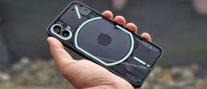

NETWORK Technology
GSM / HSPA / LTE / 5G
LAUNCH Announced 2022, July 12
Status Available. Released 2022, July 16
BODY Dimensions 159.2 x 75.8 x 8.3 mm (6.27 x 2.98 x 0.33 in)
Weight 193.5 g (6.84 oz)
Build Glass front (Gorilla Glass 5), glass back (Gorilla Glass 5), aluminum frame
SIM Dual SIM (Nano-SIM, dual stand-by)
Multiple LED lights on the back (notifications, charging progress, camera fill light)
Blinking red light on the back (video recording indicator)
IP53 - splash, water and dust resistant
DISPLAY Type OLED, 1B colors, 120Hz, HDR10+, 500 nits (typ), 1200 nits (peak)
Size 6.55 inches, 103.6 cm2 (~85.8% screen-to-body ratio)
Resolution 1080 x 2400 pixels, 20:9 ratio (~402 ppi density)
Protection Corning Gorilla Glass 5
PLATFORM OS Android 12, Nothing OS 1.1.0
Chipset Qualcomm SM7325-AE Snapdragon 778G+ 5G (6 nm)
CPU Octa-core (1x2.5 GHz Cortex-A78 & 3x2.4 GHz Cortex-A78 & 4x1.8 GHz Cortex-A55)
GPU Adreno 642L
MEMORY Card slot No
Internal 128GB 8GB RAM, 256GB 8GB RAM, 256GB 12GB RAM
UFS 3.1
MAIN CAMERA Dual 50 MP, f/1.9, 24mm (wide), 1/1.56", 1.0µm, PDAF, OIS
50 MP, f/2.2, 114˚ (ultrawide), 1/2.76", 0.64µm, AF
Features LED flash, panorama, HDR
Video 4K@30fps, 1080p@30/60fps, gyro-EIS, live HDR
SELFIE CAMERA Single 16 MP, f/2.5, (wide), 1/3.1", 1.0µm
Video 1080p@30fps
SOUND Loudspeaker Yes, with stereo speakers
3.5mm jack No
COMMS WLAN Wi-Fi 802.11 a/b/g/n/ac/6, dual-band, hotspot
Bluetooth 5.2, A2DP, LE
GPS Yes, with A-GPS. Up to dual-band: GLONASS (1), BDS (2), GALILEO (1), QZSS
NFC Yes
Radio No
USB USB Type-C 2.0, USB On-The-Go
FEATURES Sensors Fingerprint (under display, optical), accelerometer, proximity, gyro, compass
BATTERY Type Li-Po 4500 mAh, non-removable
Charging Fast charging 33W, 50% in 30 min, 100% in 70 min (advertised)
Wireless charging 15W
Reverse wireless charging 5W
Power Delivery 3.0
Quick Charge 4.0
MISC Colors White, Black
Models A063
SAR 1.29 W/kg (head) 1.09 W/kg (body)
SAR EU 0.99 W/kg (head) 1.48 W/kg (body)
Price $ 745.00 / £ 399.00 / € 469.00
TESTS Performance AnTuTu: 592789 (v9)
GeekBench: 3024 (v5.1)
GFXBench: 33fps (ES 3.1 onscreen)
Display Contrast ratio: Infinite (nominal)
Camera Photo / Video
Loudspeaker -24.4 LUFS (Very good)
Battery life
Endurance rating 108h